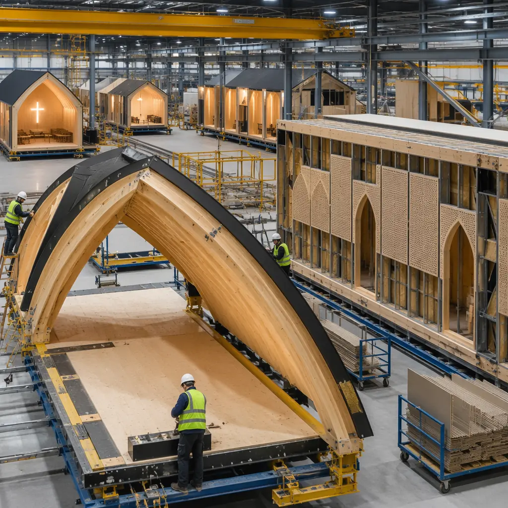
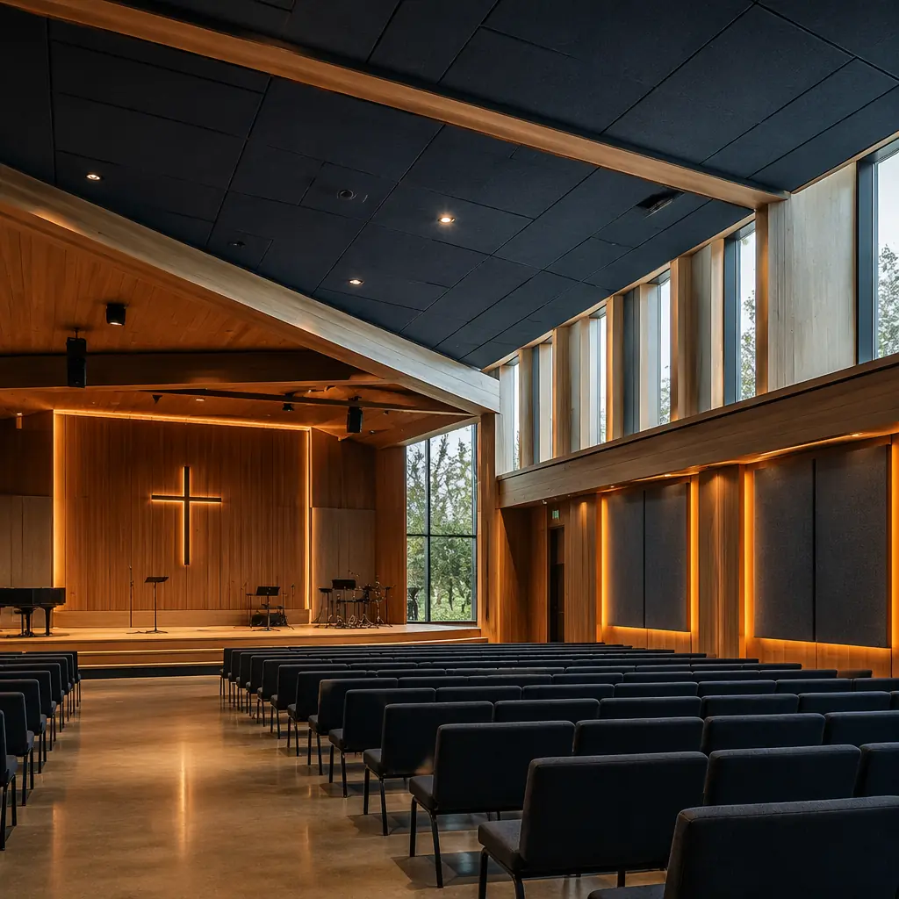

Religious organizations in the United States spend an estimated $12-15 billion annually on construction and renovation, yet faith-based building projects face a unique triple constraint that commercial developers rarely encounter: they must balance sacred architectural requirements with donor-funded budgets and the pressure to open doors before pledged contributions lose momentum. A traditional ground-up church, mosque, or temple takes 18-36 months from groundbreaking to first service — during which congregations meet in temporary spaces that drain energy, attendance, and giving. Modular prefabricated construction compresses the on-site build phase from 12-20 months to 6-10 months — a 45-50% reduction — by manufacturing 70-80% of the building in a factory environment while site foundations and utilities are prepared concurrently. For a congregation financing a $4.2 million worship center through a 3-year capital campaign, accelerating occupancy by 8 months eliminates roughly $95,000 in temporary facility rental costs and preserves the fundraising momentum that converts pledges into completed sanctuaries. This is not about building cheaper churches — it is about building better stewardship of the resources congregations entrust to their building committees.

Why Faith-Based Construction Projects Face Unique Challenges That Modular Solves
Religious building projects operate under a set of constraints that make modular delivery particularly advantageous:
- Donor-funded budgets create schedule-to-giving alignment pressure: Capital campaigns for religious buildings typically follow a 3-year pledge cycle. When construction takes 18-24 months, the gap between pledge completion and building occupancy creates a dangerous "valley of deferred expectation" where congregational energy dissipates. Modular construction's 6-10 month on-site phase compresses this gap to the point where the final pledge payments and the opening celebration can align within the same fiscal year — a synchronization that traditional construction's schedule variability cannot deliver. The financing structures available for modular construction further reduce the strain on capital campaign timelines by allowing phased payment draws that track factory production milestones rather than unpredictable site progress.
- Sacred space requirements demand architectural specificity that mass-produced buildings cannot provide: A mosque requires a qibla wall oriented precisely toward Mecca with ablution facilities and gender-separated prayer areas. A contemporary evangelical church needs a worship auditorium with specific acoustic properties, sightlines to a stage, and flexible seating for 300-1,200 people. A Hindu temple requires a garbhagriha (sanctum sanctorum) with specific proportions and orientation. Modular construction is not about selecting from a catalog of pre-designed boxes — it is about manufacturing custom building components to precise architectural specifications in a controlled factory environment. The same CAD-to-fabrication workflow that produces complex curtain wall geometries for modular office buildings can produce a vaulted sanctuary ceiling with the acoustic performance of a traditionally-built worship space — because the engineering is the same, only the architectural expression changes.
- Volunteer labor and phased occupancy are standard in faith-based projects but incompatible with traditional construction sequencing: Many congregations reduce costs by contributing volunteer labor for finish work, furnishings, and landscaping. Traditional construction's linear sequencing means volunteers cannot access the building until the general contractor demobilizes — typically month 18-20 of a 24-month project. Modular construction achieves weathertight status in 6-10 weeks of module setting, after which interior finishes proceed in a factory-controlled environment while volunteers can simultaneously begin work on site improvements, parking areas, and landscaping. This parallel occupancy path can compress the total project timeline by an additional 2-3 months beyond the base modular schedule advantage.
- Zoning and community acceptance timelines are longer for religious buildings, making schedule compression after approvals more valuable: Religious land use applications face heightened scrutiny under RLUIPA (Religious Land Use and Institutionalized Persons Act) and local zoning codes. The approval process for a new house of worship routinely takes 12-18 months — during which the congregation is already counting down to occupancy. Once approvals are secured, every month of construction delay costs not just money but congregational goodwill. Modular construction's factory-concurrent schedule model means that the 12-month approval window can overlap with module engineering and procurement, so that production begins within weeks of permit issuance rather than months. This overlapping of approval and preparation phases is structurally impossible in traditional construction because design must be 100% complete before bidding, and bidding must conclude before any materials are ordered.
These constraints compound for multi-phase faith campuses. A congregation planning a worship center, education wing, fellowship hall, and administrative offices as sequential phases faces 8-12 years of continuous construction if built traditionally — a timeline that spans multiple pastoral tenures and capital campaign cycles. Modular construction enables a phased modular master plan where the worship center is delivered first (year 1), the education wing modules are added adjacent (year 2-3), and the fellowship hall completes the campus (year 4-5) — each phase a self-contained modular delivery with its own budget, schedule, and fundraising campaign — all while the earlier phases remain fully operational with zero construction disruption.

Religious Building Types Where Modular Delivers the Strongest Value
Worship Centers and Sanctuaries — The Acoustic and Spatial Core
The worship auditorium is the single most demanding space in any religious facility: it must seat 300-1,200 people with unobstructed sightlines, deliver speech intelligibility (STI >0.60) for spoken word and musical clarity for worship bands, and create an atmosphere of reverence that traditional multipurpose rooms cannot achieve. Modular construction's factory environment allows acoustic treatments — absorption panels, diffusers, bass traps — to be integrated into wall and ceiling modules during manufacturing, tested for performance, and delivered to site as verified acoustic assemblies. A traditional site-built sanctuary depends on field-installed acoustic treatments whose performance cannot be verified until the building is complete and the sound system commissioned — at which point remediation requires costly demolition. A 600-seat modular worship center with integrated acoustic design typically achieves RT60 (reverberation time) of 1.2-1.6 seconds for contemporary worship — the sweet spot between intelligibility and musical warmth — verified in the factory before a single module leaves the production line.
Education Wings and Sunday School Facilities
Religious education spaces require a fundamentally different architectural typology than worship spaces: small classrooms (200-400 sq ft) with acoustic separation, age-appropriate fixtures (lower countertops and sinks for children's rooms), flexible dividers for combined classes, and secure check-in/check-out circulation paths. These standardized, repeatable room types are ideally suited to modular construction's production-line methodology. A 12-classroom education wing manufactured as 8-10 volumetric modules achieves the same square footage as traditional construction but with factory-installed plumbing for classroom sinks, pre-wired AV infrastructure for digital teaching tools, and fire-rated corridor assemblies tested before site delivery. The same modular methodology proven in K-12 school construction applies directly to religious education facilities — because a Sunday school classroom and a public school classroom share the same fundamental requirements for safety, accessibility, and learning environment quality.
Multi-Purpose Fellowship Halls and Community Centers
The fellowship hall is the most heavily programmed space in any religious facility: Sunday coffee hour, Wednesday community meals, wedding receptions, funeral luncheons, youth group gatherings, voting precinct, disaster relief staging, and community rental events. Each use case demands different spatial configurations, HVAC loads, and acoustic conditions. Modular construction's open-span structural capability — achieving 60-80 ft clear spans with steel moment frames — creates column-free fellowship halls that can be rapidly reconfigured between uses. The factory-built approach also allows the commercial kitchen (Type I hood, fire suppression, grease interceptor, health department compliance) to be manufactured as a self-contained module with all MEP systems pre-installed and tested — eliminating the 6-8 week field coordination period that commercial kitchen rough-in typically requires in traditional construction.
Administrative Offices and Pastoral Counseling Spaces
Church administrative offices require the same functionality as professional office buildings but with specific privacy requirements for pastoral counseling, confidential giving records, and HR-sensitive conversations. Modular office modules with factory-installed acoustic insulation (STC 50+ between counseling offices), integrated data cabling for church management software, and ADA-compliant accessible layouts provide turnkey administrative space that integrates seamlessly with the worship and education wings of a faith campus — all sharing the same modular delivery timeline and fixed-cost contract structure.

Architectural Flexibility: Why Modular Does Not Mean "Boxy" for Religious Buildings
The most persistent misconception about modular construction in the faith community is that modular equals "portable classroom aesthetic" — rectangular boxes with flat roofs and vinyl siding. This misconception conflates temporary modular trailers with permanent modular construction (PMC), which are fundamentally different building types governed by different building codes (IBC versus HUD), different financing structures, and different architectural capabilities.
Permanent modular construction for religious buildings supports:
- Complex roof geometries: Gabled, hip, and clerestory roof forms are achieved by manufacturing roof modules with the desired pitch (typically 4:12 to 8:12) in the factory, then marrying them to wall modules on site. The roof modules include factory-installed insulation, vapor barriers, and standing-seam metal roofing — eliminating the most weather-dependent phase of traditional construction.
- Custom facade materials: Brick veneer, stone cladding, fiber cement panels, curtain wall glazing, and EIFS stucco systems are all compatible with modular construction. The facade material is applied to the module's exterior sheathing in the factory or immediately after module setting — a process that takes 2-3 weeks versus 6-8 weeks of scaffolding-dependent traditional facade installation.
- Double-height volumes: Worship spaces requiring 20-30 ft ceilings are achieved through open-span steel frames that connect adjacent modules or through stacked modules with the floor assembly removed between levels. These structural solutions are engineered during the design phase, fabricated in the same factory, and erected on site in the same module-setting sequence as the rest of the building — no separate structural steel subcontractor required.
- Stained glass and custom fenestration: Window openings of any size and proportion are framed into modules during manufacturing. Stained glass panels, whether new commissions or relocated from a previous sanctuary, are installed into factory-prepared openings with the same flashing and weatherproofing detailing as traditional construction — but completed indoors before the module leaves the factory floor.
This architectural capability is the reason that modular construction costs and traditional construction costs converge for projects above 5,000 sq ft with architectural aspirations beyond basic warehouse shells. The factory environment eliminates the field labor premium for complex geometries — a vaulted ceiling that costs $45/sq ft to frame on site might cost $28/sq ft when jig-built in a factory with overhead crane access. For faith communities that want their building to express their theological identity through architecture rather than settle for a generic shell, modular construction's factory precision makes architectural ambition more affordable, not less.
Cost and Timeline Benchmarks for Religious Modular Construction
Religious organizations considering modular construction should benchmark against these typical project parameters, derived from modular faith-based projects in the 5,000-25,000 sq ft range:
- Worship center (8,000 sq ft, 400 seats): $195-265/sq ft modular versus $220-310/sq ft traditional. Total project savings: $200,000-360,000. Schedule: 8-10 months modular versus 14-18 months traditional.
- Education wing (6,000 sq ft, 12 classrooms): $175-230/sq ft modular versus $200-275/sq ft traditional. Schedule advantage: 6-8 months versus 10-14 months.
- Fellowship hall + commercial kitchen (5,000 sq ft): $210-280/sq ft modular versus $240-330/sq ft traditional. The kitchen module alone saves 6-8 weeks of field MEP coordination.
- Full faith campus (20,000 sq ft, worship + education + fellowship): $190-260/sq ft modular versus $220-300/sq ft traditional. Phased delivery allows worship center occupancy in year 1 while education wing modules are manufactured for year 2 delivery — impossible with traditional construction's linear sequencing.
These cost ranges assume architectural finishes appropriate for permanent religious facilities: painted drywall interiors, LVT or carpet flooring, acoustic ceiling treatments, LED lighting, and HVAC systems sized for assembly occupancy (higher CFM per square foot than office or residential). The cost premium for traditional construction largely reflects the field labor required to achieve the same level of finish quality and acoustic performance that modular construction achieves in a factory environment with jigs, templates, and quality control systems. As explored in our comprehensive modular construction cost analysis, the cost advantage of modular construction increases with project complexity — a simple rectangular warehouse sees minimal savings from modular, while a worship center with complex acoustics, custom millwork, and specialized AV infrastructure captures the full 12-18% cost advantage.
Sustainability and Stewardship: The Environmental Case for Modular Religious Buildings
For faith communities where environmental stewardship is a theological commitment as well as a practical concern, modular construction delivers measurable sustainability advantages:
- Construction waste reduction of 50-70%: Factory manufacturing generates 1.8-2.5 lbs of waste per square foot versus 4.2-5.5 lbs for traditional site-built construction, according to Waste & Resources Action Programme (WRAP) data. For a 15,000 sq ft faith campus, that represents 18-24 fewer tons of construction debris in landfills — a figure that directly supports the "care for creation" mandates in many faith traditions' environmental statements.
- Embodied carbon reduction through material optimization: Factory cut-lists optimized by CNC machinery reduce structural steel and lumber waste to 2-3% versus 10-15% for field-cut materials. The resulting embodied carbon savings for a typical modular religious building are 15-25% compared to an equivalent traditionally-built structure — verified through whole-building life cycle assessment (LCA) that congregations can include in their grant applications to faith-based environmental foundations.
- Energy performance verified before occupancy: Modular building envelopes are assembled under factory quality control with continuous air barriers, blower-door tested for air leakage (<3 ACH50), and commissioned before modules leave the factory. The operational energy savings over a 40-year building life cycle typically exceed the initial construction cost premium for enhanced envelope performance within 7-10 years — aligning with the long institutional time horizons of religious organizations that plan in generations, not quarters.
These sustainability metrics align modular religious buildings with LEED v4.1 BD+C certification pathways and with the growing number of faith-based green building initiatives. The factory-documented waste diversion, IAQ management, and material sourcing data that modular construction generates as a byproduct of its quality systems directly satisfies the documentation requirements that make LEED certification burdensome for traditional construction projects — MODURA provides this documentation as a standard deliverable, not an added service.
Is Modular Right for Your Faith-Based Project?
Modular construction delivers the strongest value for religious building projects that exhibit these characteristics:
- Facility size 5,000-30,000 sq ft: The sweet spot where module count (8-40) achieves factory production-line efficiency and the schedule advantage (6-10 months saved) provides the greatest fundraising alignment benefit
- Multi-phase campus master plan: When a congregation is planning sequential phases (worship first, education next, fellowship later) — modular's phased delivery model means each phase is completed and occupied while the next is manufactured, eliminating the "permanent construction site" fatigue that erodes congregational morale
- Donor-funded with fixed budget constraints: Capital campaigns that cannot absorb cost overruns benefit from modular's design-finalization-before-production model, which reduces change orders to 2-4% versus 10-15% for traditional construction — protecting the donor dollars that congregations work years to raise
- Site-constrained or occupied-campus projects: When the new building must be constructed adjacent to an existing facility that remains in use — modular's compressed on-site duration (6-10 weeks of module setting versus 12-20 months of traditional construction activity) minimizes disruption to ongoing ministry operations
- Acoustic requirements beyond standard construction: Worship spaces that demand verified acoustic performance — speech intelligibility, musical clarity, sound isolation between simultaneous uses — benefit from factory-integrated acoustic treatments that are tested before delivery, eliminating the risk of post-construction acoustic remediation
For one-off landmark religious buildings designed as architectural icons with complex custom geometries — cathedrals, historic sanctuary reproductions, or buildings whose architectural expression cannot be modularized without compromising design intent — traditional construction remains the appropriate delivery method. But for the 85% of religious building stock that consists of functional, mission-driven facilities where the architecture serves the ministry rather than the reverse, modular construction delivers the combination of schedule certainty, cost predictability, quality documentation, and environmental stewardship that faith communities demand of their building committees.
MODURA brings 500+ completed modular projects across 18 countries and 4 ISO 9001/14001 certified factories to every faith-based engagement. Whether you're planning a single worship center or a multi-phase religious campus, contact our institutional projects team for a free feasibility assessment including site analysis, conceptual massing, acoustic performance modeling, and a phased modular delivery timeline aligned to your capital campaign milestones and congregational needs.